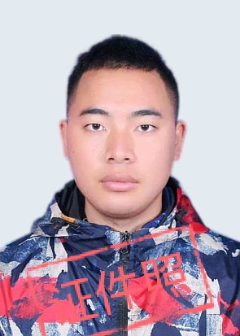

| #基本信息 | ||||||||
| 姓名 | 鲁志春 | 性别 | 男 | 年龄 | 23 |  | ||
| 民族 | 彝族 | 婚姻状况 | 已婚 | 联系电话 | 13037730182 | |||
| 籍贯 | 云南临沧 | 居住地 | 广西贵港 | 学历 | 全日制本科 | |||
| 毕业时间 | 2022 | 毕业学校 | 云南楚雄师范学院 | 所学专业 | 计算机类 数字媒体技术 |
|||
| 工作经验 | 1年 | 期望薪资 | 5000以上 | 应聘岗位 | web全栈开发/前端开发/后端开发/开发或者测试 | |||
| #技术栈 |
|
前端：会使用vue2/3，了解vue，vue-router，vuex运行原理。掌握ajax请求，了解js运行机制，掌握js高阶函数用法。掌握浏览器dom，bom操作。会使用ui组件库vant、elementUi等。了解微信小程序开发，uniapp开发。使用过地图api 后端：会使用springboot和nodejs，接触过thinkphp，了解mvc和前后端分离的开发模式。会写复杂的sql查询（连接查询，子查询），了解身份验证session、jwt、oauth2。 工具：会使用git、vscode、idea。会基本linux命令，有线上系统部署经验。 |
| #工作经历 |
| 云南楚雄泰宇信息科技 2022-08-08 ~ 至今 |
|
负责项目： 1、城管违停缴费系统； 简介：给乱停车的当事人快捷缴费的通道，缴费后通过钉钉通知到各个执法员审批开锁。缴费通道是贴在车上的缴费二维码，和临时停车收费类似。 主要的技术难点：使用的是微信小程序连接蓝牙打印机设备做打印功能，涉及到了和硬件设备交互。我们和云南财政系统对接财政缴费，其中运用到了对称加密。 运用到的技术栈：springboot做主要业务逻辑后端，redis做缓存。使用oauth2协议和低代码平台对接数据。mysql5做数据保存，使用到了图片验证码和java图片拼合；前端使用vue3，ui库用的vant；使用datav给城管指挥中心制作数据大屏。 2、社区商圈小程序； 简介：一个购物小程序，包含商品上架、销售、支付下单、配送等功能。 主要的技术难点：需要对接微信小程序支付。 技术栈：后端使用springboot，前端小程序使用vant作为ui组件库。 3、党建文件管理系统 简介：服务给社区党建办公室和学校党建办公室完成数字化党建管理，主要功能包括党建材料的上传和预览。 |
| 云南楚雄泛联信息科技 2021-11-01 ~ 2022-08-01 |
|
负责项目： 1、楚雄州医院卒中健康管理系统（微信公众号）； 简介：给病人录入健康信息还有各项检查信息，录入后护士医生对健康状况评估给定随访频率，到时间了推送给病人家属随访。 主要的技术难点：这个项目的特点就是字段多，多达一百多项字段采用了分表存储。随访任务功能，使用了定时工具，轮询接口完成。 运用到的技术栈：thinkphp，jquery。 2、协助完成问卷答题系统（微信公众号）； 简介：主要用在社会满意度调查，模拟问卷调查但是会判断对错，有多选题、单选题类型，有答题分数排行榜，答题完成还实现了抽奖功能。 主要的技术难点：实现抽奖用到了redis对数据操作原子级别特性。 运用到的技术栈：thinkphp，jquery。 |
| #自我评价 |
|
我富有责任心和团队精神，有书写代码规范。也喜欢讨论写技术性问题，要是能进贵司我很荣幸。
取得的证书有：计算机二级myql，驾照d和c1； |